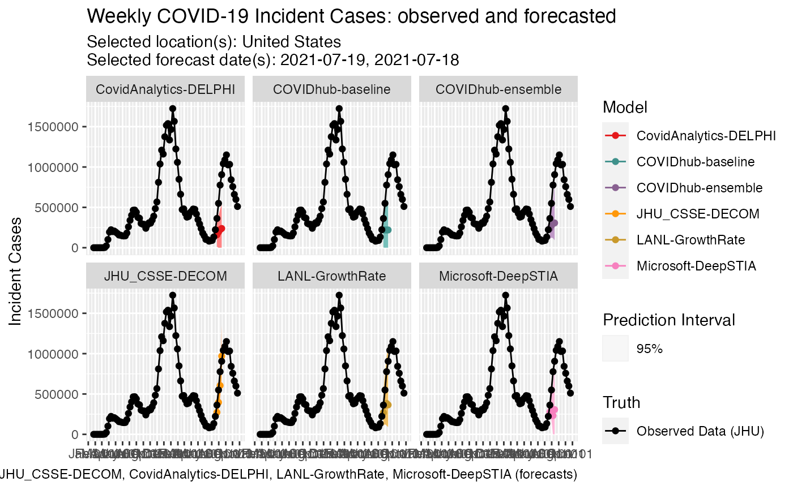
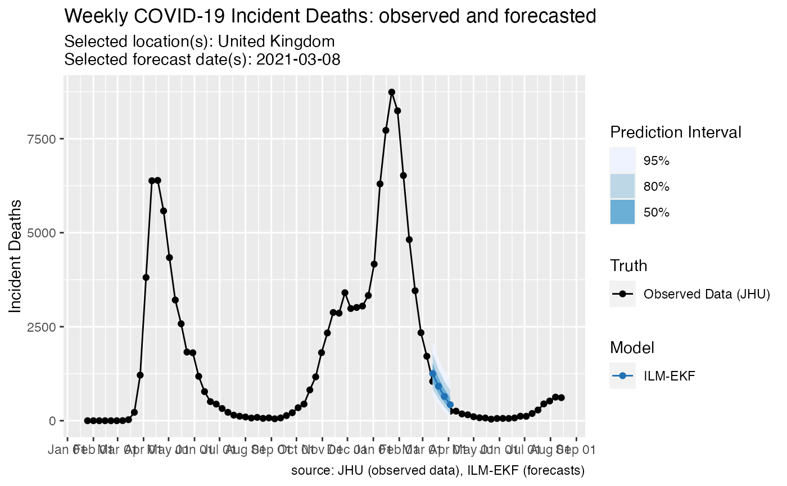

plot_forecasts.RdFaceted plots for multiple models, locations and forecast dates are supported with specified facet formula.
plot_forecasts( forecast_data, truth_data = NULL, hub = c("US", "ECDC"), models, target_variable, locations, facet = NULL, facet_scales = "fixed", facet_nrow = NULL, facet_ncol = NULL, forecast_dates, intervals, horizon, truth_source, use_median_as_point = FALSE, plot_truth = TRUE, plot = TRUE, fill_by_model = FALSE, fill_transparency = 1, truth_as_of = NULL, top_layer = c("truth", "forecast"), title = "default", subtitle = "default", show_caption = TRUE )
| forecast_data | required data.frame with forecasts in the format returned
by |
|---|---|
| truth_data | optional data.frame from one truth source in the format returned
by |
| hub | character vector, where the first element indicates the hub
from which to load forecasts. Possible options are |
| models | vector of strings specifying models to plot.
Default to all models in |
| target_variable | string specifying target type. It should be one of
|
| locations | vector of strings for fips code, |
| facet | interpretable facet option for ggplot. Function will error if multiple locations are passed in without location in the facet formula. |
| facet_scales | argument for scales in ggplot2::facet_wrap. Default to |
| facet_nrow | number of rows for facetting; optional. |
| facet_ncol | number of columns for facetting; optional. |
| forecast_dates | date string vectors for forecast dates to plot. Default to forecast_dates present in the data. |
| intervals | values indicating which central prediction interval levels
to plot. |
| horizon | forecasts are plotted for the horizon time steps after the
forecast date. Default to all available horizons in |
| truth_source | character specifying where the truth data will
be loaded from if |
| use_median_as_point | logical for using median quantiles as point forecasts in plot.
Default to |
| plot_truth | logical for showing truth data in plot. Default to |
| plot | logical for showing the plot. Default to |
| fill_by_model | logical for specifying colors in plot.
If |
| fill_transparency | numeric value used to set transparency of intervals. 0 means fully transparent, 1 means opaque. |
| truth_as_of | the plot includes the truth data that would have been
in real time as of the |
| top_layer | character vector, where the first element indicates the top layer
of the resulting plot. Possible options are |
| title | optional text for the title of the plot. If left as |
| subtitle | optional text for the subtitle of the plot. If left as |
| show_caption | logical, if |
invisible ggplot object
# load forecasts from US forecast hub us_forecasts <- load_latest_forecasts( models = c( "COVIDhub-ensemble", "COVIDhub-baseline", "JHU_CSSE-DECOM", "CovidAnalytics-DELPHI", "LANL-GrowthRate", "Microsoft-DeepSTIA" ), last_forecast_date = "2021-07-21", forecast_date_window_size = 6, locations = "US", types = c("point", "quantile"), targets = paste(1:4, "wk ahead inc case"), source = "zoltar" )#>#>#>#># plot plot_forecasts( forecast_data = us_forecasts, models = c( "COVIDhub-ensemble", "COVIDhub-baseline", "JHU_CSSE-DECOM", "CovidAnalytics-DELPHI", "LANL-GrowthRate", "Microsoft-DeepSTIA" ), target_variable = "inc case", locations = c("US"), intervals = c(.95), horizon = 4, truth_source = "JHU", plot = TRUE, fill_by_model = TRUE, facet = ~model, facet_scales = "fixed", title = "default", show_caption = TRUE )#>#> #> #> #> #>#> #> #>#> #># load forecasts from ECDC forecast hub ecdc_forecasts <- load_latest_forecasts( models = c("ILM-EKF"), hub = c("ECDC", "US"), last_forecast_date = "2021-03-08", forecast_date_window_size = 0, locations = c("GB"), targets = paste(1:4, "wk ahead inc death"), source = "zoltar" )#>#>#>#>#plot plot_forecasts( forecast_data = ecdc_forecasts, hub = c("ECDC", "US"), locations = "GB", truth_source = "JHU", top_layer = c("forecast") )#>#> #> #> #> #>#> #> #>#> #>